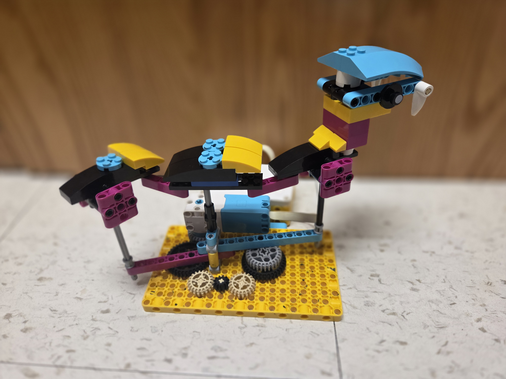
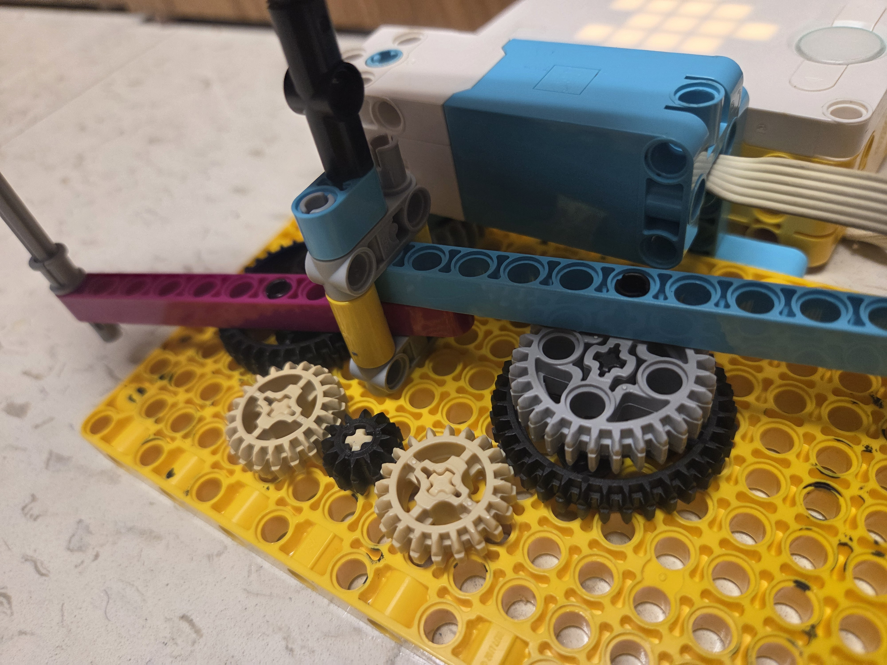

Our 3rd project was inspired by biomimicry. We designed a robot that mimics the structure and movement of an animal of our choosing. I chose to replicate the slithering motion of a snake. Some of the challenges I faced were converted circular motion to linear motion, and getting gear ratios to work out in my favor. One revision I made was anchoring the middle segment in place to minimize the otherwise odd/unpredictable movement.